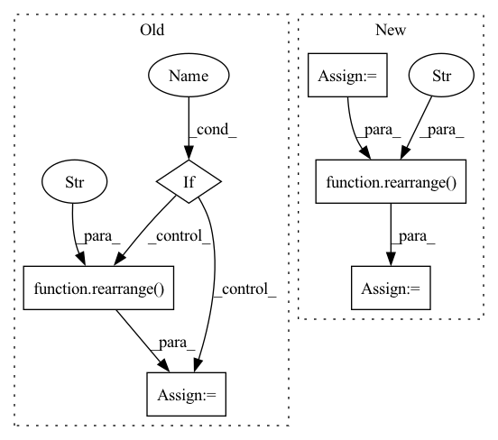

Pattern ID :3410
Before Change
x = self.spatial_conv(x)
if is_video :
x = rearrange( x, "(b f) c h w -> b c f h w" , b = b)
if not convolve_across_time:
return x
After Change
scale_shift = None
if exists(self.time_mlp) and exists(time_emb):
time_emb = self.time_mlp(time_emb)
time_emb = rearrange( time_emb, "b c -> b c 1 1" )
scale_shift = time_emb.chunk(2, dim = 1)
h = self.block1(x, scale_shift = scale_shift, convolve_across_time = convolve_across_time)
In pattern: SUPERPATTERN
Frequency: 3
Non-data size: 6
Instances Fragment ID: 17497662
Project Name: lucidrains/make-a-video-pytorch
Commit Name: 0af63d7db1964f26183becb09f25cd09c40ffbf5
Time: 2022-12-09
Author: lucidrains@gmail.com
File Name: make_a_video_pytorch/make_a_video.py
M Class Name: Pseudo3DConv
N Class Name: ResnetBlock
M Method Name: forward(4)
N Method Name: forward(3)
M Parent Class: nn.Module
N Parent Class: nn.Module
M File Name: make_a_video_pytorch/make_a_video.py
N File Name: make_a_video_pytorch/make_a_video.py
M Start Line: 93
M End Line: 115
N Start Line: 239
N End Line: 253
Before Change
def forward(self, x):
no_batch = (x.ndim == 1)
if no_batch :
x = rearrange( x, "n -> () n" )
if x.dtype == torch.long:
x = F.one_hot(x, num_classes = self.num_alphabet)
After Change
no_batch = x.ndim == 2
if no_batch:
x = rearrange(x, "... -> () ...")
x = self._trunk(x)
out = map_values(lambda fn: fn(x), self._heads)
if no_batch:
out = map_values(lambda t: rearrange(t, "() ... -> ..."), out)
x = rearrange( x, "() ... -> ..." )
if return_embeddings:
return out, x
Fragment ID: 17497661
Project Name: lucidrains/enformer-pytorch
Commit Name: cf8d4440cc67d8b83d4e70906be27f54087158ec
Time: 2021-12-14
Author: lucidrains@gmail.com
File Name: enformer_pytorch/enformer_pytorch.py
M Class Name: Enformer
N Class Name: Enformer
M Method Name: forward(3)
N Method Name: forward(2)
M Parent Class: nn.Module
N Parent Class: nn.Module
M File Name: enformer_pytorch/enformer_pytorch.py
N File Name: enformer_pytorch/enformer_pytorch.py
M Start Line: 348
M End Line: 355
N Start Line: 350
N End Line: 372
Before Change
quantize = self.project_out(quantize)
if need_transpose :
quantize = rearrange( quantize, "b d n -> b n d" )
return quantize, embed_ind, loss
After Change
quantize = self.project_out(quantize)
if need_transpose:
quantize = rearrange(quantize, "b n d -> b d n")
if self.accept_image_fmap:
quantize = rearrange( quantize, "b (h w) c -> b c h w" , h = height, w = width)
embed_ind = rearrange(embed_ind, "b (h w) -> b h w", h = height, w = width)
return quantize, embed_ind, loss
Fragment ID: 17497666
Project Name: lucidrains/vector-quantize-pytorch
Commit Name: c9725a6e2556251a8b8a5d73795dabdc59c7c0f4
Time: 2021-12-03
Author: lucidrains@gmail.com
File Name: vector_quantize_pytorch/vector_quantize_pytorch.py
M Class Name: VectorQuantize
N Class Name: VectorQuantize
M Method Name: forward(2)
N Method Name: forward(2)
M Parent Class: nn.Module
N Parent Class: nn.Module
M File Name: vector_quantize_pytorch/vector_quantize_pytorch.py
N File Name: vector_quantize_pytorch/vector_quantize_pytorch.py
M Start Line: 303
M End Line: 331
N Start Line: 304
N End Line: 342